WHITE MAGIC ART STUDIO
第二十四章
父與子
桃園郊區・火焰結界內
「……龍兒。」
熟悉的聲音，從身後傳來。
晉輝勉強撐起身體，望著眼前那道背影。
他有多久沒這樣看著自己的兒子了？
「別過去……」
他的聲音沙啞得幾乎聽不清楚。
「太危險了……」
景皓沒有立刻回答。
他蹲下身，握住父親伸來的手。
那隻曾經牽著他練習聖術、教他辨認各種植物的手，如今竟連握緊他的力氣都沒有。
景皓的喉頭微微一緊。
「……你先別說話。」
他輕輕放下父親的手。
站起身。
前方，炎君正從煙塵中緩步走來。
「哎呀呀……」
炎君拍了拍衣服上的灰塵，抬頭望向景皓。
「居然有人能穿過我的結界？」
他瞇起眼睛，隨即露出笑容。
「這不是梁景皓嗎？」
炎君歪了歪頭。
「怎麼，今天沒帶你兒子一起來？」
景皓沒有回答。
他只是望著炎君。
翠綠色的光芒，沿著虹膜緩緩亮起。
「……你找錯對手了。」
炎君笑了。
「拜託，說真的。」
他攤開雙手。
「我們都見過三次面了，還不能算朋友嗎？」
「相信我。」
景皓從口袋裡取出三顆乾燥的種子。
「沒有人會想跟你當朋友。」
話音未落。
三顆種子已經被他拋向前方的土地。
炎君低頭看了一眼。
「……又是種子？」
景皓雙掌交錯。
細緻的綠色光紋沿著手背浮現，掌心間迅速凝聚出一團由花朵精華交織而成的能量。
他猛然向前一推。
轟！
能量迎面襲來。
炎君抬手擋下，腳下卻被衝擊推得向後滑出數步。
「喔？」
他挑起眉毛。
「有點意思。」
景皓沒有給他喘息的時間。
右手一揮。
地面微微震動。
三顆種子同時破土。
第一株植物迅速抽出莖葉，開出鮮明的黃色花朵。
第二株沿著碎石間的裂縫蔓延，細長的藤莖攀上附近的斷牆。
第三株則綻開一簇深紅色花朵，花瓣隨著微光輕輕舒展。
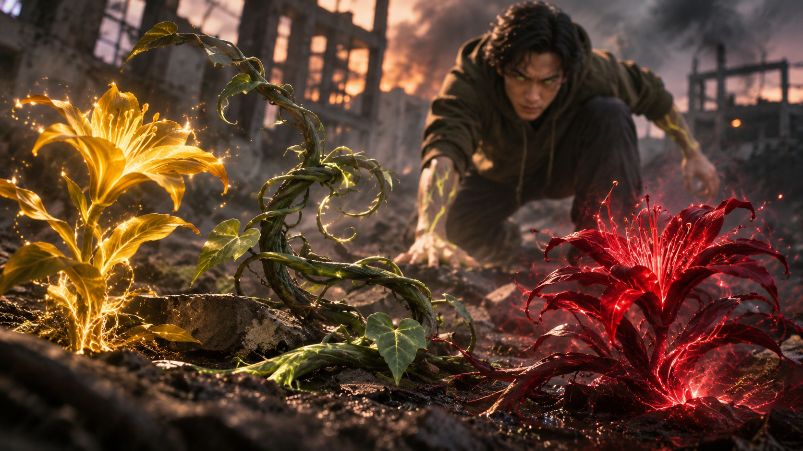
景皓踩近紅花。
花朵隨即化為細碎的光點，沿著他的腳踝向上流動。
精華被吸收的瞬間，他右臂的肌肉微微繃緊。
下一秒——
他衝了出去。
砰！
一拳直取炎君面門。
炎君抬起左手，穩穩接住。
「力氣不錯。」
他笑了一聲。
「但技術還差得遠。」
膝蓋猛然向前頂出。
景皓悶哼一聲，身體不由得彎下。
炎君正要追擊，腳邊卻突然傳來細微的聲響。
幾條藤蔓從地面竄出。
纏住他的腳踝。
「……嘖。」
炎君低頭。
火焰沿著腿部爆開，藤蔓瞬間焦黑。
但就在他低頭的瞬間，景皓已經抽身退開。
他並不是要靠那幾條藤蔓困住炎君。
只是需要一點時間。
景皓翻身落地，迅速捏碎另一顆泛著藍色光澤的種子。
精華沿著雙腿流動。
他再次踏地。
整個人如離弦的箭般衝出。
一記側踢，準確擊中炎君腰側。
砰！
炎君的身體稍微偏了一下。
卻沒有倒退。
他慢慢轉過頭。
臉上反而露出興奮的笑容。
「不錯嘛。」
「比你爸多了點花樣。」
炎君伸手抓住景皓尚未完全收回的手臂。
「不過……」
另一隻手燃起火焰。
「還是太嫩了。」
轟！
猛烈的衝擊將景皓震飛出去。
他撞上一棵枯木，樹幹應聲斷裂。
景皓摔落地面，單膝跪下。
胸口劇烈起伏。
他咬緊牙關，撐著地面重新站起。
不遠處，晉輝正看著他。
那雙眼睛裡，第一次流露出如此明顯的焦急。
「龍兒……」
景皓聽見了。
卻沒有回頭。
他知道，只要自己倒下，炎君的下一個目標就是父親。
他從腰間取出最後幾顆預備戰鬥的種子。
兩顆拋向地面。
另一顆則在掌心捏碎。
細微的綠色花粉附著在指節上。
毒刺花。
景皓深吸一口氣。
再次衝向炎君。
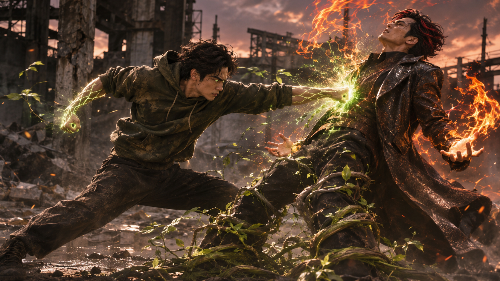
這一次，他沒有急著追求一擊奏效。
第一拳，逼迫炎君抬手。
第二拳，試探對方的防線。
第三拳，順勢轉向側腹。
炎君連續擋下幾次攻擊。
卻忽然皺起眉頭。
「……嗯？」
他低頭看向自己的手臂。
被景皓擊中的位置，隱隱浮現細微的綠色光點。
「原來還藏了這招。」
炎君迅速後退。
火焰沿著皮膚流過，將殘留的花粉焚去。
他重新抬頭。
「怎麼？」
「沒了你那片森林幫忙，就只剩這點本事？」
景皓喘著氣。
沒有立即回答。
他望著炎君。
眼神卻沒有退縮。
「至少……」
他緩緩握緊拳頭。
「我不需要靠成為魔君，來掩飾自己的軟弱。」
炎君的笑容消失了。
四周的火焰忽然猛烈晃動。
「……你說什麼？」
景皓沒有重複。
炎君低下頭，輕輕笑了一聲。
「呵。」
下一瞬。
他的身影驟然逼近。
景皓只看見一道火光閃過。
還來不及抬手，便被炎君一把制住，整個人離開地面。
「嘴巴倒是挺硬。」
炎君抬頭望著他。
「我開始明白，你爸為什麼那麼想保護你了。」
景皓緊抓著他的手腕，試圖掙脫。
卻無法撼動分毫。
「因為他知道……」
炎君的聲音逐漸低沉。
「你根本撐不住。」
景皓的雙腳在半空中掙動。
掌心的花朵精華早已消耗殆盡。
他努力凝聚聖術。
但剛剛成形的光芒，又在炎君的火焰中迅速消散。
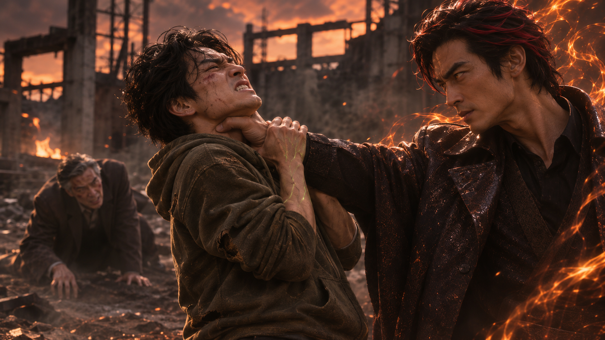
視線開始模糊。
他想起了昱鎧。
想起了景毅、景瑜。
還有身後那個，自己明明恨了十年，卻又無法放著不管的父親。
不行。
至少現在……
還不能倒下。
不遠處。
晉輝望著被炎君制住的兒子。
他試圖站起來。
雙手卻無法支撐身體。
「……龍兒。」
他的聲音很輕。
景皓沒有回應。
晉輝艱難地向前挪動。
他望著自己的右手。
那隻手已經不如從前穩定。
可他還記得。
很多年前，景皓第一次成功讓種子發芽時，曾經高興得在院子裡跑來跑去。
那時候的孩子，總喜歡抓著他的手。
「爸爸，你看！」
晉輝緩緩閉上眼睛。
再睜開時，他將指尖按進焦黑的土壤。
「……拜託。」
土地微微震動。
一株細小的嫩芽，從碎石間探出頭來。
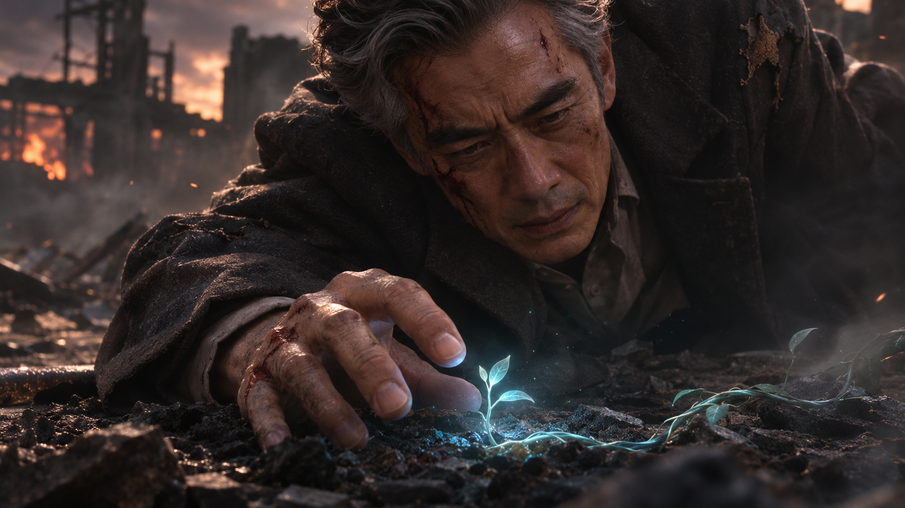
青藍色。
那是忘憂木特有的色澤。
嫩芽沿著裂縫向前延伸。
一寸。
又一寸。
它穿過倒塌的牆角，避開尚未熄滅的火焰。
枝葉不斷被高溫逼得蜷縮，卻又一次次重新舒展。
晉輝的手指微微顫抖。
額前滲出汗水。
他已經沒有多少力量了。
但那株忘憂木，仍在生長。
直到它悄悄攀上景皓身後的斷石。
一根細藤，緩緩伸向他的手。
然後——
開出了一朵花。
青藍色的花瓣，在炙熱的空氣中輕輕展開。
沒有耀眼的光柱。
沒有驚人的震動。
只是一朵小小的花。
術之木……
竟然開花了？
景皓垂落的手指，忽然碰到了柔軟的花瓣感受到一股未知的力量。
他勉強睜開眼睛。
遠處的晉輝，仍將手按在地上。
沒有說話。
景皓慢慢握住那朵花。
指尖輕輕收攏。
花瓣碎成細微的光點。
青藍色的精華沿著他的掌心，迅速流入體內。
那一瞬間。
景皓感覺到一股陌生的力量。
不是自己熟悉的花語。
卻又彷彿與木瞳深處的某種東西產生了共鳴。
他猛然睜開雙眼。
雙手的光紋轉為青藍色。
景皓用盡最後的力氣，抓住炎君的手臂。
將掌心按向他的額前。
轟！
一股無形的力量驟然擴散。
炎君全身猛地僵住。
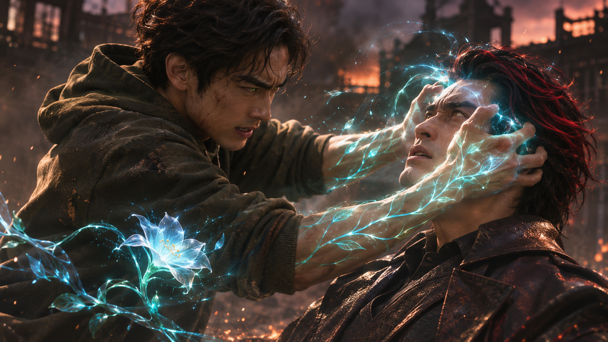
「……什麼？」
他的表情第一次出現真正的錯愕。
「你……」
話音未落。
眼前的廢墟忽然消失了。
陽光。
操場。
一群穿著制服的學生，從校舍旁跑過。
炎君怔怔站在原地。
他低頭看見自己身上的制服。
又摸了摸頭髮。
短短的平頭。
遠處有人朝他揮手。
「張國豪！」
那聲音如此熟悉。
熟悉得讓他幾乎忘了呼吸。
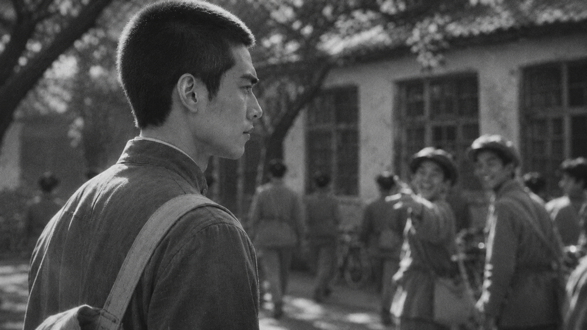
「一起走啊！」
有人笑著催促。
畫面忽然一晃。
操場消失。
取而代之的是混亂的街道。
刺耳的聲音。
奔跑的人影。
「張國豪……」
有人站在他面前。
眼神裡滿是難以置信。
「你做了什麼……？」
炎君猛然後退。
「不……」
更多破碎的畫面接連浮現。
熟悉的臉。
曾經的聲音。
還有那些被他被埋藏的往事、與最悲痛的感受突然在這個瞬間出現在君的腦海中。
「不……不要……」
他抱住頭。
「給我停下來！」
現實中的炎君突然鬆開了手。
景皓失去支撐，跌落地面。
他勉強用雙手撐住身體，大口喘息。
炎君卻像完全忘了他的存在。
只是踉蹌後退。
「閉嘴……」
他望著空無一人的前方。
「全部給我閉嘴！」
轟——！
火焰從他周身失控般爆發。
整片結界劇烈震動。
一道裂痕，突然出現在高處。
接著是第二道。
第三道。
最後——
砰！
籠罩整片廢墟的火焰結界，轟然瓦解。
結界外・樹林
景毅猛然抬頭。
「……消失了？」
原本阻擋在前方的火焰，正迅速散去。
瑞恩也察覺到了變化。
她望向景毅。
兩人交換了一個眼神。
沒有任何猶豫。
黑金色的槍矛在他手中凝聚成形。
立刻衝向廢墟。
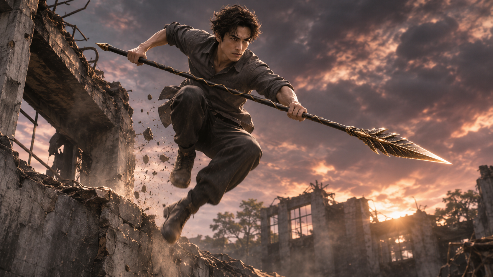
「哥！」
景毅的聲音穿過煙塵。
他一眼就看見倒在地上的景皓，以及不遠處神情異常的炎君。
景毅的眼神瞬間沉了下來。
「你這傢伙……！」
他猛然加速。
玄武木的力量沿著術器湧現。
景毅躍過一塊斷牆，槍矛隨著身體的旋轉，狠狠朝炎君揮下。
砰！
炎君本能地抬手格擋。
卻因為尚未從混亂的記憶中恢復，被衝擊震得連退數步。
景毅落地。
沒有停下。
他迅速轉身，槍矛接連揮出。
每一次碰撞，都帶著沉重的震動。
炎君勉強擋下兩擊。
第三擊卻直接逼得他後退。
「……可惡！」
火焰沿著雙臂爆開。
景毅立刻收槍防禦。
強烈的熱浪將他推開。
他踉蹌幾步，重新站穩。
「嘖……」
就在炎君準備追擊時。
一道水光忽然從側面掠過。
炎君猛地回頭。
瑞恩站在不遠處。
銀灰色短披肩隨風揚起。
她右手握著黑金色畫筆。
筆尖在空中迅速劃過。
一道。
兩道。
三道。
細緻的水彩筆觸，在半空中逐漸凝聚成形。
幾尾透明的金魚，竟從那些筆觸間游了出來。
牠們擺動尾鰭。
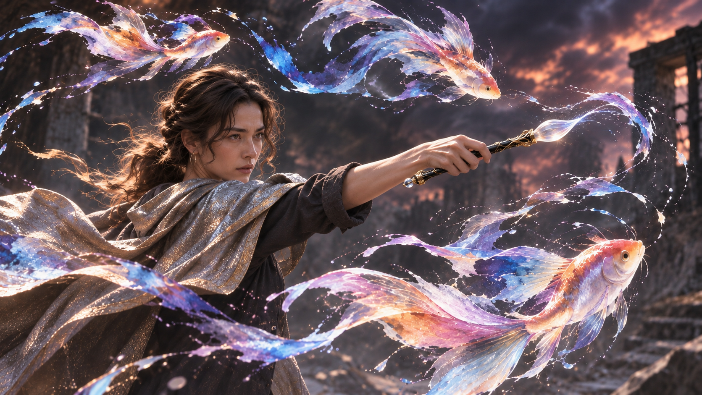
彷彿前方不是空氣，而是一片看不見的水域。
炎君皺起眉頭。
「……什麼東西？」
瑞恩沒有回答。
她輕輕一揮畫筆。
金魚迅速游向炎君。
就在接近他的瞬間——
砰！
幾尾金魚同時化作水花。
無數細長的水箭向外散開，接連撞上炎君周圍的火焰。
滋——！
白霧瞬間升起。
炎君抬手擋住迎面而來的攻擊。
卻仍被逼得連連後退。
「你們這群……」
他咬緊牙關。
「煩人的傢伙！」
瑞恩的動作沒有停下。
畫筆在空中劃出一道長長的弧線。
水氣迅速凝聚。
一柄晶瑩的水之巨刃，在她身前逐漸成形。
她雙手握住畫筆。
向前揮出。
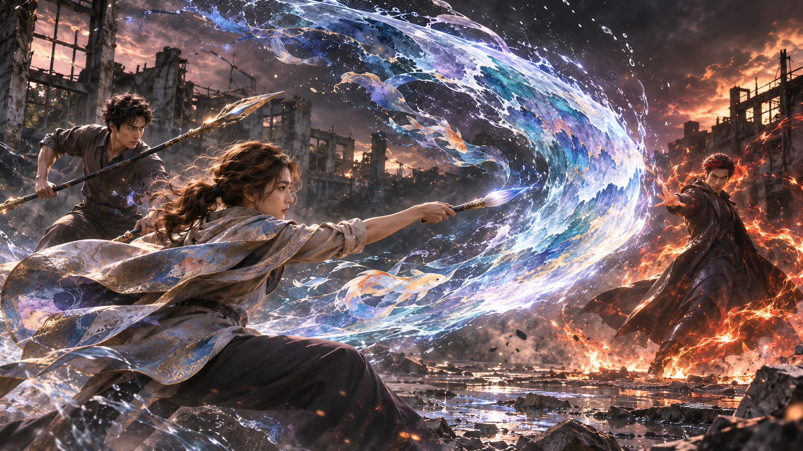
轟！
巨大的水刃橫越廢墟。
炎君剛抬起雙臂，便被迎面而來的衝擊擊中。
整個人倒飛出去。
砰！
撞進遠處的斷牆。
碎石紛紛落下。
煙塵再度升起。
景毅握緊槍矛。
目光緊盯著那片廢墟。
片刻後。
炎君緩緩站起。
他看了看景毅。
又看向瑞恩。
最後，目光落在遠處的景皓身上。
他的眼神仍有些恍惚。
彷彿還有什麼聲音，停留在腦海深處。
「……這不是結束。」
炎君低聲說道。
火焰重新在腳下聚集。
景毅正要追上前。
炎君的身影卻已被火光包圍。
下一瞬。
他消失在原地。
只留下逐漸散去的煙霧。
「哥！」
景毅立刻收起術器，朝景皓奔去。
景皓跪在地上，正勉強支撐著身體。
「你怎麼樣？」
景毅蹲下身，伸手扶住他的肩膀。
景皓卻猛然抓住他的手。
「爸……」
「什麼？」
「不要管我……」
景皓抬起頭。
目光越過景毅，望向遠處的斷牆。
「爸還在那裡！」
他掙扎著站起身。
景毅正要跟上，卻忽然停住。
他的手掌，沾上了景皓傷處的血。
他低頭看了一眼。
然後——
嘴角緩緩揚起。
那不是景毅會露出的笑容。
一抹枯葉般的褐黃色，在他的虹膜深處短暫閃過。
他望向景皓遠去的背影。
沒有追上。
反而悄悄退入一旁的煙塵。
片刻後。
另一道人影從廢墟另一側跑來。
同樣的灰色襯衫。
同樣的面容。
真正的梁景毅。
「哥！」
他氣喘吁吁地停下腳步。
卻發現景皓早已奔向父親。
「爸！」
景皓跪倒在晉輝身旁。
他伸手扶住父親。
晉輝的呼吸很輕。
身上的大衣破損不堪，護身的忘憂木藤甲也幾乎失去了光澤。
景皓的木瞳再次亮起。
翠綠色的虹膜，映出父親體內細微的能量流動。
他迅速查看傷勢。
越看，臉色越難看。
「……不行。」
他低聲說。
「不行……」
景毅趕了過來。
「哥！」
他蹲下身。
木瞳同樣泛起微光。
「爸怎麼樣？」
景皓沒有回答。
景毅看向父親。
很快便察覺到異常。
「心臟附近的損傷太嚴重了……」
他的聲音慢慢低了下來。
「還有殘留的魔君之火……」
景皓猛地抬頭。
「幫我拿種子！」
「哥……」
「我說幫我拿！」
景毅愣了一下。
隨即伸手協助。
景皓將口袋裡剩餘的種子全部倒在掌心。
一顆。
兩顆。
三顆。
他迅速辨認。
哪一種可以穩定生命力？
哪一種能修復受損的組織？
哪一種能夠……
他的手停住了。
這些種子。
沒有一種足以應付眼前的情況。
「……可惡。」
景皓低下頭。
「可惡……」
景毅已經開始嘗試以聖術協助治療。
但父親體內的能量仍在不斷衰弱。
他咬緊牙關。
「哥……」
「不要放棄！」
景皓的聲音忽然提高。
景毅怔住。
景皓握著種子的手，不停顫抖。
「一定還有辦法……」
他的眼眶逐漸泛紅。
「我一定還有辦法……」
就在這時。
「……龍兒。」
景皓猛然抬頭。
晉輝正望著他。
眼神已經有些渙散。
卻仍努力想看清兒子的臉。
「……真的是你嗎？」
景皓的呼吸停了一瞬。
「不要說話。」
他低頭繼續尋找種子。
「你先不要說話……」
晉輝卻只是看著他。
嘴角慢慢浮現一抹笑意。
「長這麼大了……」
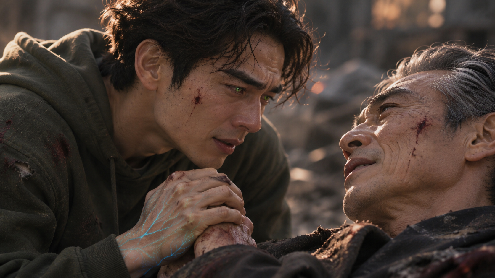
景皓的手指僵住。
「……爸。」
晉輝的目光緩緩移向景毅。
「武兒……」
景毅連忙靠近。
「我在。」
「我就說了……」
晉輝艱難地吸了一口氣。
「你哥……一定會回來的……」
景毅的眼眶瞬間紅了。
「爸……」
他用力搖頭。
「你不要再講了。」
晉輝只是輕輕笑了一下。
「你們兩個……」
他的目光在兄弟之間緩緩移動。
「終於……」
後面的話，沒有說完。
景皓握住父親的手。
「我叫你不要說話！」
他的聲音顫抖。
「你聽不懂嗎？」
晉輝沒有生氣。
只是安靜地望著他。
那個眼神。
讓景皓想起了很久以前。
很久以前，父親也曾經這樣看著他。
沒有責備。
沒有命令。
只是單純地，看著自己的孩子。
「龍兒……」
晉輝輕聲說。
「沒關係……」
景皓的眼淚終於落了下來。
「什麼沒關係……」
他低下頭。
「誰跟你說沒關係……」
他伸手，輕輕扶住父親的額頭。
就在指尖碰觸的瞬間——
一抹青藍色的光芒，忽然浮現。
景皓愣住。
那是……
忘憂花的精華？
殘留在掌心的細微光點，竟與父親額前的木瞳能量產生了共鳴。
下一瞬。
一段陌生的聲音，忽然在他腦海中響起。
「臺灣現在面臨的……」
那是父親的聲音。
比現在年輕許多。
「恐怕已經不只是惡魔了。」
畫面模糊地浮現。
他看見父親坐在房間裡。
母親慧萍就在身旁。
「所以……」
母親輕聲問。
「你才希望孩子們離開臺灣嗎？」
畫面忽然轉換。
父親握著母親的手。
「記得……」
他的聲音很輕。
「我真的，很愛很愛我們的孩子。」
他停了一下。
「還有妳。」
景皓的心猛地一震。
下一段記憶，接踵而來。
模糊的光影。
混亂的聲音。
母親的呼喊。
「啊——！」
景皓想伸手。
卻碰不到任何東西。
「媽……？」
畫面再次變化。
他看見更年輕的父親。
懷裡抱著一個剛出生的嬰兒。
那是自己。
晉輝低頭望著懷中的孩子。
眼神裡，有景皓從未見過的溫柔。
「景皓出生的時候……」
父親的聲音在耳邊響起。
「我就知道，我可以為他付出我的全部。」
然後。
更多聲音接連浮現。
「老爸！」
那是小時候的自己。
「父親！」
那是景毅。
「爸爸！」
還有景瑜。
三個孩子的聲音，交錯在同一段記憶裡。
笑聲。
腳步聲。
熟悉的家。
以及一個始終站在他們身後的父親。
景皓怔怔望著。
他忽然發現，自己以為早已失去的那些時光，原來一直被父親珍藏著。
只是這十年來……
他從來不知道。
現實中。
景皓猛然回過神。
所有畫面都在短短幾秒內消失。
父親仍躺在他面前。
呼吸微弱。
景皓卻像被什麼東西狠狠撞了一下。
他終於看見了。
那些父親從未說出口的恐懼。
那些被藏起來的愛。
還有那個自己一直以為冷漠、嚴厲，甚至不曾真正理解過自己的男人。
原來也曾這樣愛著他們。
可是……
為什麼？
為什麼不說？
為什麼寧願讓他們恨你，也不肯說？
景皓的眼淚再也止不住。
「……梁晉輝。」
他緊緊握著父親的手。
「你給我活下去。」
晉輝沒有回答。
「你聽到沒有……」
景皓低下頭。
「你這些年什麼都不說……」
他的聲音越來越顫抖。
「到底為什麼？」
景毅怔怔看著哥哥。
他從來沒有見過景皓這個樣子。
那個總是習慣照顧別人、遇到事情就自己扛下來的哥哥。
此刻卻像個無助的孩子。
「不公平……」
景皓將額頭輕輕貼向父親。
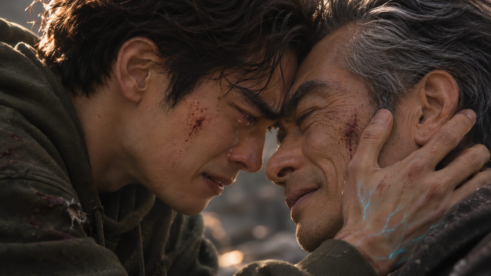
「你不能這樣……」
他閉上眼睛。
「我還沒跟你說完……」
淚水沿著臉頰滑落。
「你還沒跟我道歉……」
他哽咽了一下。
「我也還沒跟你道歉……」
景皓用力握緊父親的手。
「你不能就這樣走了……」
一旁的景毅低下頭。
眼淚也悄悄落了下來。
他伸手，輕輕搭住哥哥的肩膀。
「哥……」
話才剛出口。
景毅忽然怔住。
「……哥？」
景皓的右肩，正緩緩浮現一抹綠光。
起初只是幾個細小的光點。
隨後，光點沿著肩頭逐漸匯聚。
一道半透明的羽翼輪廓，悄然展開。
細緻的羽紋，如同被光芒一片片雕刻出來。
那熟悉的形狀……
景毅睜大眼睛。
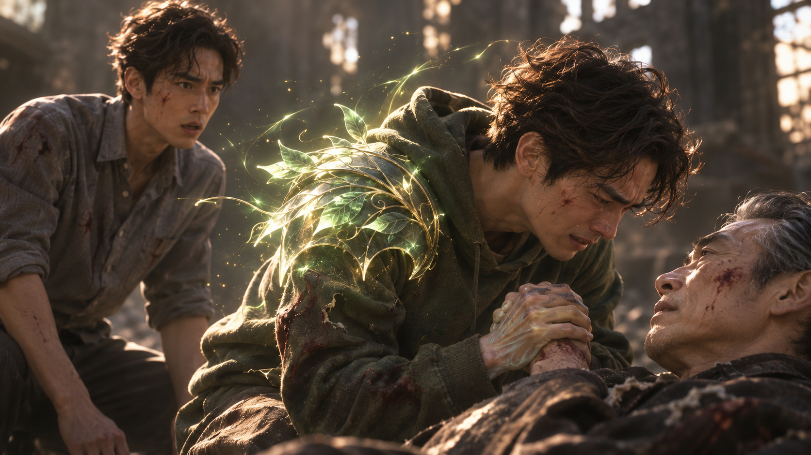
「……木翼？」
景皓沒有聽見。
他仍緊緊握著父親的手。
「……回來。」
聲音輕得幾乎聽不見。
「求你……」
一滴眼淚，落在焦黑的土地上。
就在那一瞬間。
地面微微震動。
景毅低頭。
一根纖細的嫩芽，竟從兩人身旁的土壤中探出。
它迅速抽出葉片。
細藤沿著地面舒展。
隨後。
第一朵花，緩緩綻放。
第二朵。
第三朵。
三朵銀白色的花，靜靜盛開在廢墟之間。
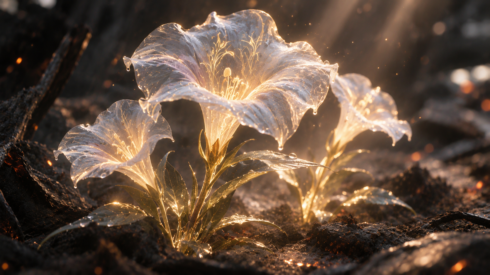
花瓣半透明，形似小巧的喇叭，柔和的光芒沿著邊緣流動。
中央浮現細緻的金色紋路。
景毅的呼吸停住了。
「……哥。」
他輕輕拉了拉景皓的衣袖。
「你看……」
景皓緩緩抬起頭。
看見那三朵花的瞬間，他整個人僵住。
「……神癒花？」
他伸出手。
卻在即將碰到花瓣時，停了下來。
「可是……」
景皓低頭看向自己的右肩。
那道熟悉的綠色羽翼，仍靜靜散發著光芒。
他明明已經……
「我不是……」
景皓的聲音有些茫然。
景毅看著哥哥。
忽然想起前一晚，他們在客房裡談過的話。
拉比究竟有沒有放棄景皓？
他不知道。
直到現在，他仍然不知道這一切究竟代表什麼。
但有一件事，他很確定。
父親還在等他們。
「哥！」
景毅抓住他的肩膀。
「先別想了！」
景皓猛然回神。
「快救爸！」
景皓低頭看向父親。
隨即用力點頭。
「……好。」
他小心翼翼地捧起其中一朵神癒花。
花瓣在掌心化為細碎的光芒。
銀白色的精華緩緩流入雙手。
景皓深吸一口氣。
將雙掌輕輕按在晉輝胸前。
「拜託……」
他的聲音仍然顫抖。
「求你了……」
他望著父親。
「臭老爸……」
眼淚再次落下。
「你不准走。」
景皓閉上眼睛。
努力讓精華沿著父親受損的經絡流動。
然而，他的雙手仍止不住顫抖。
就在這時。
另一雙手，輕輕覆了上來。
景皓睜開眼。
景毅跪在他身旁。
眼眶通紅。
卻努力擠出一個很淡的笑容。
「哥。」
他望著哥哥。
「是我們的……」
景毅的聲音哽住。
停了片刻，才把話說完。
「……臭老爸。」
景皓怔怔看著他。
然後，輕輕點頭。
「……嗯。」
兄弟兩人的手，穩穩疊在一起。
景皓引導著神癒花的精華。
景毅則以自己的聖術協助穩定父親體內紊亂的能量。
兩股力量逐漸交織。
如同藤蔓，沿著同一個方向生長。
晉輝胸前，緩緩亮起一抹金光。
那光芒並不刺眼。
反而溫暖得像清晨的陽光。
細緻的金色紋路沿著胸口向外延伸。
原本衰弱的生命氣息，終於出現了一絲回應。
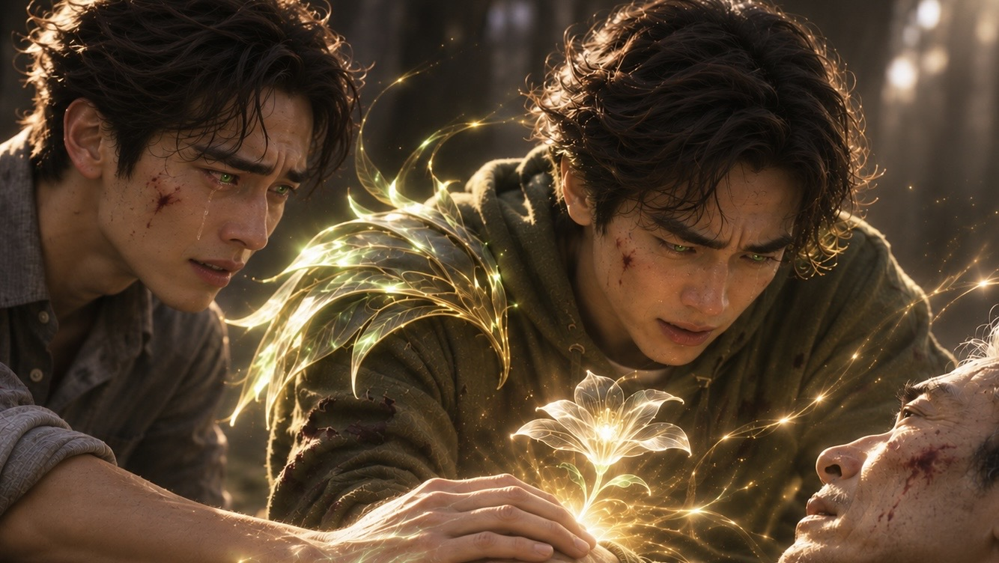
景毅猛然抬頭。
「哥……！」
景皓也察覺到了。
他沒有說話。
只是更加專注地引導精華。
一點。
再一點。
晉輝的呼吸，漸漸變得平穩。
景皓的眼淚仍在流。
但這一次，他沒有鬆手。
景毅也沒有。
瑞恩站在一旁，安靜地望著這一幕。
她緩緩放下手中的畫筆。
眼眶微微泛紅。
廢墟裡，仍有尚未散去的煙塵。
遠方的天空，也還殘留著火焰燃燒過的暗紅色。
但在那片焦黑的土地上。
三朵神癒花，正靜靜迎著晚風。
而梁家的父子三人，終於再次聚在一起。
同一時間・廢墟另一側
一道人影站在斷牆後方。
他靜靜望著遠處的金色光芒。
嘴角浮現一抹笑意。
「……原來如此。」
那張原本屬於梁景毅的臉，開始緩緩改變。
眉眼。
鼻樑。
嘴角。
最後，恢復成曾永華的模樣。
他低頭看向自己的手掌。
先前沾上的血液，正被一股暗紅色的力量緩緩包覆。
逐漸凝聚成一顆小小的球體。
曾永華將它握在掌心。
再次望向遠處。
景皓仍跪在父親身旁。
完全沒有察覺。
曾永華輕輕笑了一聲。
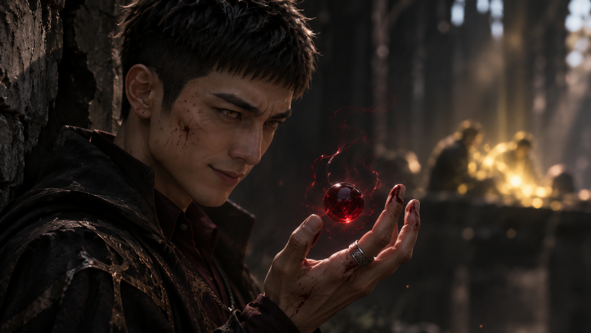
「……事情越來越有趣了。」
他轉過身。
悄無聲息地消失在廢墟深處。
只留下遠方那抹溫柔的金光。
仍在暮色中，緩緩亮著。